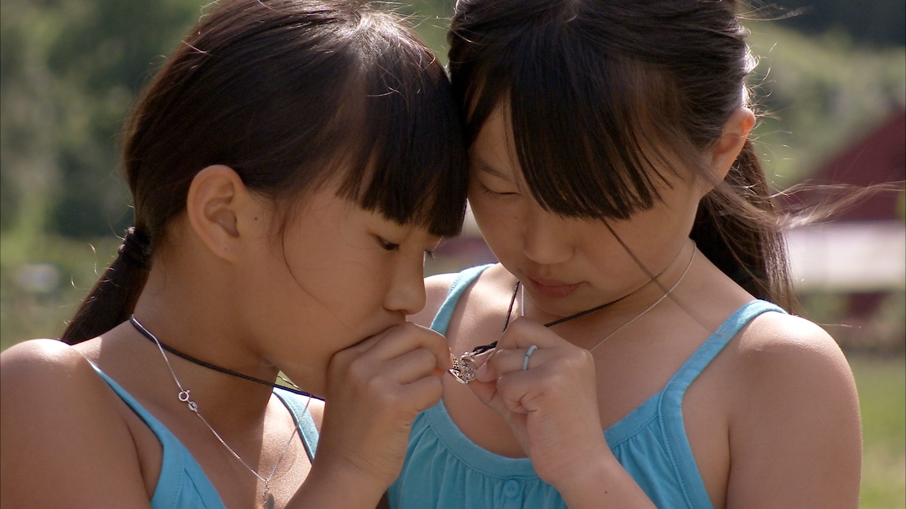
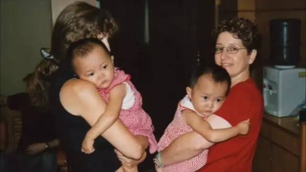
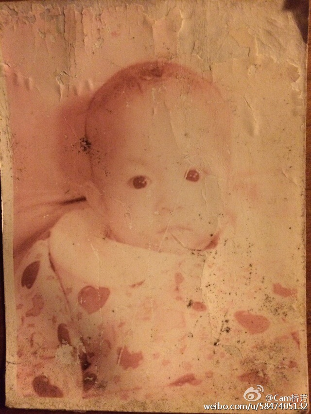
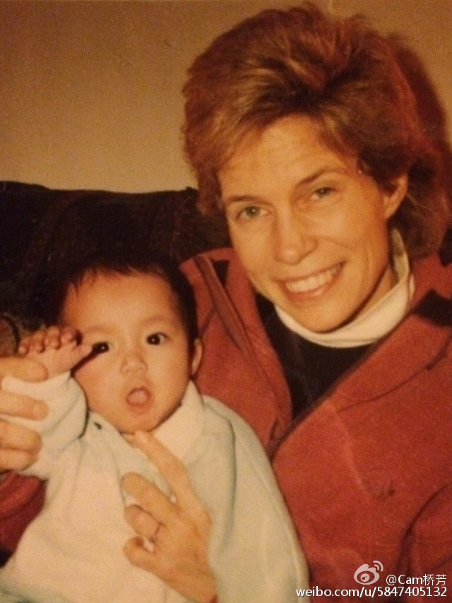
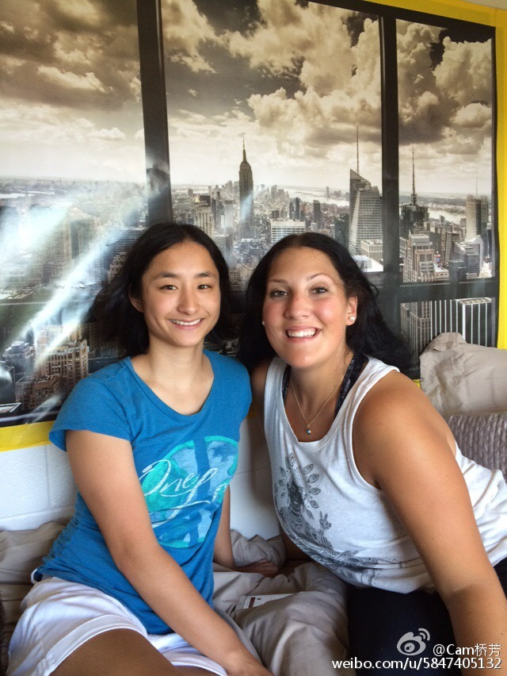
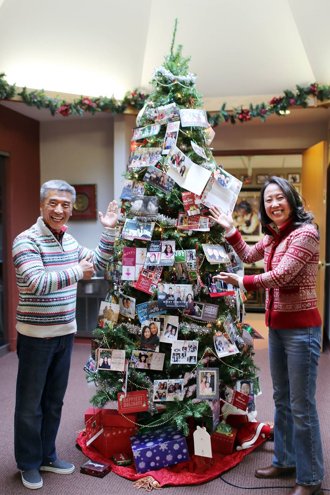
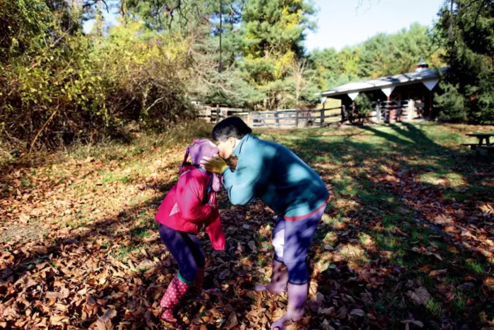
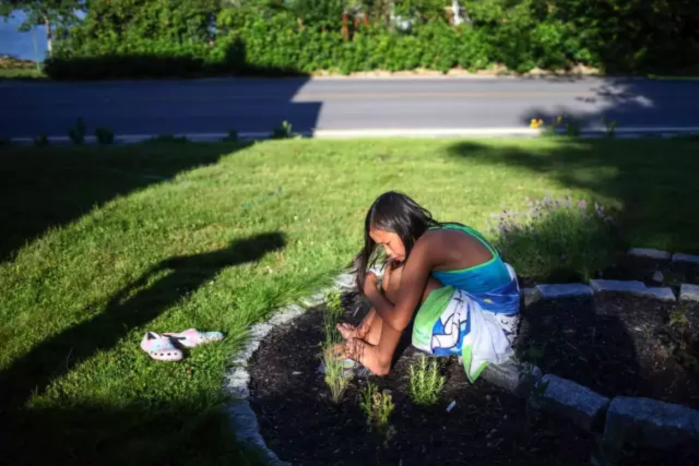

Mia and Alexandra were respectively adopted by a US family, Angela and Andy Hansen and a Norwegian family, Wenche Hauglum and Sigmund in 2004 in Hunan province, China. However, when the two families first came to the orphanage to pick the baby they did not know that Mia and Alexandra were twins.
While it is destiny that when Angela and Andy came back to the orphanage again to sign some paperwork, Andy noticed there was a baby that looked quite like their adopted baby. And except the resemblance, the two babies even had the same red gingham dresses. But this baby was already adopted by her Norwegian parents.
Andy alerted his wife about these, so Angela decided to approach the Norwegian woman, Wenche Hauglum. Surprisingly, the two mothers found the two baby girls shared the same birthday. They sent enquiries to the adoption-agency whether Mia and Alexandra were twins. But the agency denied.
Still in doubt, Angela gave Wenche her information to keep in touch even after they went back to their country separately. When the girls were 6 months old the two families decided to go on a DNA test. Then the result turned out that they were indeed identical twins.
Mia and Alexandra visit Alexandra’s home in Norway at 8 years old. Before that Mia was raised like a typical American girl in Sacramento, California. Her life was scheduled with violin lessons, Girl Scouts, and soccer. Alexandra, living in a quiet and isolated village called Fresvik in Norway, with breath-taking view. She got used to rescuing an injured mouse,tramping through the mountain alone and walking to school down a country road before sunrise.
After their families told them about they had a twin in the distant place. They started to communicate with each other over phone in spite of language barrier. When Mia visited Alexandra, the parents fund they had an unmistakable bond. Though they lived in different place and with different culture, they found they had so much in common. They both don’t like tomatoes, olives, but at the same time like chocolates. When they met again, they soon joined hands playing around the mountains, getting close to the nature. In a interview later with Angela made by NEWS 10 ABC, she addressed:“they are really twins, I mean there are something just about each of them that it is the same. That thousands of thousands miles apart can’t influence, can’t change.”
Over the years, they keep contacting via Face time. They also met several times during a few trips. Recently, Alexandra visited Mia in US alone, they had a great time enjoying kayaking.
The whole story was recorded into a documentary by a Norwegian director Mona Friis Bertheussen. And this documentary won 11 film awards and was displayed over 30 TV stations worldwide.
Mona posted on her blog that as a director she always desired to make films that move and inspire people. Talking about the initial to do the documentary in a interview with PBS, Mona said when she heard about the story and just couldn’t believe it’s true. Then she started to wonder how it all works then determined to make this into film. It took her four years to make the film and Even now she is still filming Mia and Alexandra as they turned into teenagers.
Therefore, there will be a new documentary about the twin and their teenage life coming out later. It will will focus on their relationship, in what ways it grows, shifts and changes through this special time of their lives, the transition from being a child to becoming a grown-up.
In an email interview with Mona, she updated that Alexandra is making great improvement on her English. And her parents also support her to study in US in future thus she and Mia can have more time get together.
Mia and Alexandra are lucky to have each other, while they are not the only Chines children adopted by foreign parents.
The statistic shows that from 1999 to 2015, only in US there are 76,026 Chinese abandoned children were adopted. It became not odd to see a Chinese adopted kids story appearing on media.
Five years ago, Rosie was deserted and sent to an orphanage in Hengyang, Hunan province, China. She was diagnosed with Down's syndrome, which is typically associated with physical growth delays, characteristic facial features, and mild to moderate intellectual disability. Because of this disease, she stayed at the orphanage for four years after other kids were adopted.
But in 2015, Angela appeared and brought her back home to the US.
A year later, Rosie has already become an internet celebrity. Her photos on Instagram can obtain thousands of likes and videos on YouTube can be viewed by over a million audience.
People were attracted by her cute smile and energy showed on these photos and videos. While before this, when she stayed at the orphanage she could hardly speak fluently and was extremely introverted.
Angela married to her husband Hubby in 20005. Before she adopted Rosie, she already had four children and two of them were adopted.
She wrote in her blog that It was when she was scrolling through FB page and saw a fellow adoptive mama was advocating for this girl to find a family, she was immediately drawn to her, and her name, Rosie. Because she once had a daughter and her name was Rose back in July of 2011. And that’s also the reason she started to adopt children since 2011.
She was a little hesitated at first. She wrote in her blog, “The timing was just all wrong! We’re busy… I’m trying to slow down with work…it’s our ten-year anniversary and we wanted to take a trip…. We never had a honeymoon or any kind of tropical trip, and we thought this was our year! The list goes on and on. You know, all those “comfort things” that make you want to run for the hills when God asks you to do hard things?!”
But she couldn’t help reading her profile on computer and found they shared the same birthday. Then she made up her mind.
She kept writing blogs everyday to record her journey to meet Rosie when she flew across the ocean to pick her back home in China. She met Rosie at the 4th day; later she called it Rosie day. In her journal, she said:” I still am surprised by how well Rosie did that first day, she blew all my expectations out of the water! She is so smart and understands so much more than she can articulate back to you. ICC did an amazing job of preparing her, and I know that made such a huge difference for her!”
Rosie became known due to one of Angela’s videos posted on YouTube. In this video, she just arrived at the airport in the US and this was also the first time she met all her families. Except for her dad, sisters and brothers, other families with kids who had similar situation came to welcome her as well. When Rosie arrived, although she was still unfamiliar with them, she still cheered by their enthusiasm and high five with them one by one. This video touched many people. And they started to follow the new life of Rosie.
As for Rosie’s special situation, Angela did not treat her specially. Instead, she was treated equally like her sisters and brothers. She had to deal with some simple housework; She was encouraged to learn swimming; She has to read stories and go out to make friends.” We are trying to push the little girl to walk out of her comfort zone, adapt to the new environment and be her best self.”
Therefore, just half a year Rosie can understand English and communicate with other kids using a short sentence. “But we can’t force her to learn English and Chinese at the same due to her situation, but sometime I will paly Chinese songs for her and take her to Chinese grocery to shop.”
“She’s making wonderful progress and achieving milestones! There is no telling what she can do once she has a love of a mama, daddy and four brothers and sisters! …Please know we are in no way downplaying her condition, and what the future may hold for her. But we love this sweet girl and are ready to walk down those roads with her…side by side.” Angela Wrote.
Just a year, Rosie was surrounded by love rather than just a lonely child waiting in the orphanage. She is not the only case that Foreign families adopted somehow disabled children from China and helped them out of the worst situation. Stories like those really make people think love without boundaries.
In 4th February 2016, Camlyn published her first message on Sina Weibo, China's most popular social platform. In this message, she wrote down the only information she knew about her abandonment and expected to find her biological parents through the help of people on Weibo.
 Camlyn was born on 17th June 1995. She was abandoned in a town called Hengjie in Ningbo province in 8th July the same year. When she was found by an elder villager named Shireng Liu, there was a note with her specifying her birth information. Later, the aged man transferred her to the police station. While no one ever tried to find her back in the following days, she was sent to an orphanage, where a lesbian couple from the US adopted her.
Now Camlyn lives in an open community in west Massachusetts and starts her college life as a student in Sociology.
"I don't know why I want to find my birth parents. I guess I really want to see what they look and act like! I see kids who resemble their parents, and I want to as well! Also, I think it would be interesting to find out about them. I saw the film "somewhere between" about adopted kids from China, and one of the girls finds her parents, I guess that really sparked my interest," she explained her motives to find her birth parents.
With the support of her adoptive parents, she traveled back to the town she was found in 2007 but returned with no results. So in 2016, she decided to try again on Chinese social media. That message had attracted people's attention. After the message reported on traditional local media, Zhejiang Public Security Investigation Agency showed up to help her.
They successfully contacted with the son of Mr Liu that found Camlyn. In an interview with Hangzhou daily, he said "My father was already 70 at that time and were not able to raise another child. After he had found her, he tried to ask information about her parent over the town."
He also mentioned that five or six years later after Camlyn was adopted to the US, a young lady came to their house to inquiry about her. Then she would bring a large number of gifts to thank them for saving her daughter at the end of a year for several years.
"The last time she showed up, she told us her daughter was living a happy life in the US, and she did not want to disturb her life then she never came back again." Unfortunately, Camlyn's mother did not leave any information before she left. "My mother remembered the women's name, but my mother already passed away," said the son.
The last message Camlyn updated on Weibo is " I still have not found my biological parents yet."
After that, Camlyn got an information from a reporter saying she thought she had a family that matched her story and they talked. The reporter said the women was unmarried when she had her child, while the father already married with another woman. She abandoned her kid in the hope that another family could raise her.
However, after Camlyn sent her hair for a DNA sample, it came back negative. The women even came to the USA to meet her and her family to have another DNA test there.
"It was still negative, but she had gotten my information from the orphanage. Her baby and I were all abandoned in the same area and found on the same day, but we thought the orphanage messed up and gave her my information. And her daughter probably died already," Camlyn said in the interview.
As Camlyn grew up, she felt the racism against Asians and had identity issues. It annoyed her to be frequently asked "where are you from" a lot and "you did not look like your moms." After she came back from China in 2007, she never visited China again. But she developed interests in Chinese language and culture. She took a class on Chinese last year as a beginner and will take the next level of it. She and her moms would eat Chinese food on Chinese New Years, and she went to a couple of Chinese culture camps when she was younger.
In her Facebook, she demonstrated her as a feminist. When asking about, she admitted it was influenced by being abandoned as a girl. But at the same time, she addressed equality is the most important factor in feminism.
"Sometimes I wonder whether I am good enough and doubt whether they abandoned me because I was a girl. I think that's rooted in being adopted and felt I wasn't "good enough" for my bio parents. I'm very loved by my moms in the USA, but still, it feels like your original parents didn't find you good enough. I know if I have kids I'll adopt at least one."
Kate Crotty shared some of the same experience with Camlyn. She was adopted by a single mother in the US. During her growth, she used to resent China. When she turned into 18. She had an interview with NBCNEWS. In that interview, she said: “Last year, I would have said, ‘I’m American, I’m from Cincinnati,’ and I would have said all that in a straight tone. But after the trip to China, I would say Chinese.”
"At that point, I did not care about my past, and I did not want to know about my birth parents and China. I even hated when people were talking about China and laughed about it. After I had gone to China, I realized I was wrong."
When Kate was in the third year in Walnut Hills High School in Cincinnati, Ohio, she had a dream about her biological parents. The next day she communicated with her adoptive mother and determined to travel to China and stayed there for a while to see if there was a chance to find her parents.
When she arrived in China the first time, she immediately felt she belong there. "When I stepped out, and I saw all the people that look like me, I felt a sense of home and really comforted. Because I traveled a lot of places in the world, and when I arrived there, a brand new culture always waited for me there. When I stepped out of the plane, everything was different. But when stepped out of the plane in China, everything just like me. And people would expect me to speak Chinese, and made me feel like 'Oh, you belong here. We welcome you'."
Therefore, when she was back to study again in the US, she took one year Chinese in High school and exchange to China for a semester. But when Chinese people asked her questions in Chinese, they could know she was an American right away.
"When I first time went to China, every person I looked at and I would wonder 'Are you my mom? Are you my sister?' I was definitely insane. But ever since, I loved China."
She also confronted ethnic identity problem during growing up. There was a time; she would be mad when people pointed out that she was Chinese. Because her adoptive mother has Irish root, then she would reply that she was Irish rather than a Chinese. Her mom tried to encourage her to attend Chinese lessons and participate in activities with other girls adopted from China. But she rejected. "If I learn anything about China, people would say I am Chinese. So I rejected it. But when I reached China, I felt that I should learn it. I am a Chinese."
"It felt bad when I overdosed with identity issues. Who I am? What I want to be? Who my parents are? I was adopted by a single mom and have no siblings. So I curious about the feeling having a brother or sister. I have never known what it is like to have a dad. And I always want to know those things. The challenge is realizing that it is out there, and I can't find it. It is really frustrating to know that there are people biologically related to me on this earth, but I have no way reaching them... I really want the connection that every family between parents and their children, but I can't find It. It seems not fair, while it is life."
Kate did not find any clue about her parents in China, But she did a DNA sample match. But the DNA database in China only records those who had been a criminal before. So only if her parents or siblings commit a crime and registered, it will be possible to match the DNA. As so far, there is no further information.
Although depressed, Kate is still grateful for her adoptive mother and the wonderful life she had in America, "But I will not give up to find them."
CCAI, Chinese Children Adoption International, during the last 23 years, has helped 11,800 Chinese orphans to find a new home in the US. It was established in 1994, and the founder of it are Lily Nie and Joshua Zhong. They were both Chinese students studying abroad in the United States in the early years.

Now their agency CCAI is the largest agency regarding adoption from China across the world.Joshua had the idea to help Americans adopting Chinese orphans after he went to one of his professor’s home Dr Layman. There he saw four adopted Children and realized that Americans would be willing to glad to adopt Chinese orphans.
When China enacted the adoption law, he immediately went back to see the orphanages in China and witness the terrible situation of the orphanage. Children were living in rather narrow and dark room with all the beds in it. They were left on the chair unattended until the lunch time. He determined to give a better life to these orphans.
In 1995, CCAI created the funding and sponsorship program for Children in Chinese Orphanages. It has provided up to 2,000,000 dollars for 400 Orphanages in China. Later Lily Orphanage Care Centre was set up to train the stuff in some Chinese Orphanages.
They also concerned about the heritage of culture. When Lily was interviewed by South People magazine, she talked about: “When I met the adoptees, some of they could not even speak Chinese. It made me feel sad. The family already abandoned them in their country; then the culture was away from them too. They would feel the whole nation abandoned them and led to resentment to the nation. They need to remember the culture of where they are from.”
Therefore, they opened Joyous Chinese Culture Center. A center to teach traditional Chinese Culture like Mandarin, calligraphy, Chinese painting, paper cutting, cooking, and Dance, etc.
In the UK, there is also a group that cares about Adoptees from China.
CACH (Children Adopted from China) is the UK's only national support group for those who have been adopted from China, and their families.
It started about 21 years ago in 1996 when children from China began to be adopted to the UK. Currently, about 450 families come to CACH meeting.
As the member of CACH, various activities are available like the annual picnic, camping and B&B weekend. Full members can attend the Reunion, a weekend event in a hotel in the Midlands.
The annual reunion comprises a dinner and dance, with a live band or disco, for everyone on a Saturday evening. In the reunion, Children’s activities are for relaxation and fun such as juggling with clowns, art, hair and makeup and tattooing and for adults, guest speakers on various topics linked to China or international adoption. Some speakers have talked about going back to China for visits; others talk about psychological or sociological issues.
Monica Dowling is in charge of the reunion now. She is also a professor working on the international adoption issue. She explained that the reunion could bring the adoptees a feeling of not being the only one but also a chance to mix with other children who look like them. Her daughter Mei, who was also adopted from China, always looks forward to going.
Her daughter used to meet ethnic identity issue as well. She was asked was she Chinese or British when she was first at school. She was confused by this question for a period. And now she says she is British but was born in China. In the CACH, many families have to deal with this problem within their family.
Some families strongly encourage their children on learning Chinese at home, and many celebrate Chinese festivals like Chinese New Year. The reunion will also host Chinese dance and calligraphy for the children.
CACH particularly build a teen group on Facebook with only teenagers in it. So they can share their thoughts freely there with peers.
Meng Han is a freelancer and photographer in China. One of her works Chinese Adoptees at Home in America was published in the New York Times on 15th Dec last year. It is a series of photos telling the stories of Chinese Orphans adopted by American families.
"When I began my study in Montana in 2014, I went to know two American families through one of my friends. They both had adopted Chinese kids in their family. So I was more than welcomed to play with the adopted children. But it also raised my curiosity to know more about adopted Chinese kids in America." Miss Han said.
While it is tough to find interviewees at first, "Although the two families tried to helped me to find interviewees, I was rejected by many other families and no replies from any adoption agency." Then when she officially began to study in Maryland, things had finally made progress.
With One of Her teachers' friend’s assistance, Cheryl Wu replied her. Cheryl Wu is a second-generation Chinese woman who had adopted her daughter from China’s Jiangxi Province. She introduced Miss Han to a network of families with adopted children who often got together for parties and other occasions. During the year, she met about 20 families 35 children in 10 states. As a photographer working in Beijing for many years, she used photos to record the stories.
In your picture, I think those children seem to live a rather happy life?
"They are, indeed. I remember when I started to interview some families, they would always show me the photos of the children they took on the first day they adopted them. They felt that was a precious moment that had to be recorded. I was very touched by that, and since that moment the fate of those children had been changed. Now, most of the kids grow up in white communities. Except for their Asia appearance, curiosity about China, they are Americans."
So have you observed those adopted children come across identity problems during their growth?
"Yes. Most of those children would be confused about their identities at the age of 11 or 12. They would think about where exactly they are, why they are different, where their birth parents, and why they are abandoned. It is an awkward stage for both parents and the kids. Because even the parents themselves found it hard to explain why they are abandoned, and unable to clearly state some policies like one child policy. There is a girl who raised up by a Jewish family. When she studied in a Jewish school, she often faced hostile questioning. After she had dropped out of school, her parents encouraged her to travel around the world, including China. Now she went to college, and she told me she felt Asia is more like her home."
Do those children want to find their birth parents?
“Not really. There is a special girl. She used to live in Hong Kong with her adoptive parents. So she adapted to her life very well. And now she is satisfied with her life. Her thoughts toward her parents were: "Why should I care about you after you abandoned me."
Do all the parents support their children to find their birth parents if their children want to?
"I had asked a similar question to the parents like what if after the children find their birth parents, they decided to stay with the birth parents. Most of them said if this were the children's decision, they would support them. And some parents expressed the idea that they believed the children would not leave them because they had a very tight relationship and happy memories. Nothing could separate them. "
According to your opinion, what factor boosts so many American families to adopt children?
"Among the families I interviewed, more than half of them have religion belief, and they considered adoption as a sort of redemption. A mother told me she desired to help kids since she was a kid. After she got married and gave birth to three children, this kind of desire grew stronger. So she adopted two Chinese orphans and one of the children born with cleft lip. Of course, some family did this due to fertility problems. Actually, in America, there are also people criticizing international adoption. Because, for children, they are forced to melt into western culture and encounter difficulties in the maturation process."
After you published your work on Chinese media, is there any people contacting you to search for their kids in America?
There are two Chinese families sent emails to me. They said they had sent their children to Orphanages due to some reasons and later their kids were adopted by Americans. I tried to find some clues, but no results until now. While there are American families sought my help to locate the kid's birth parents. I went to Jiangsu Province according to the information the family offered and searched through the hospital, police station. I finally found a man in a local factory, but the couple reacted quite violently and left soon. I come to realize that you can only seek emotion identification instead of forcing them to do a DNA test. It is very hard, but they did not lose hope."